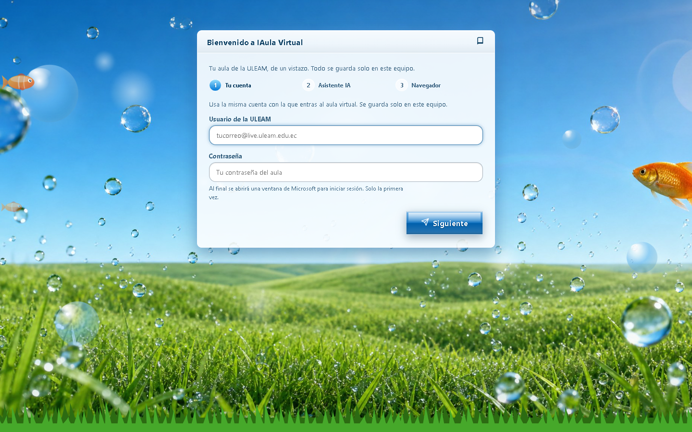
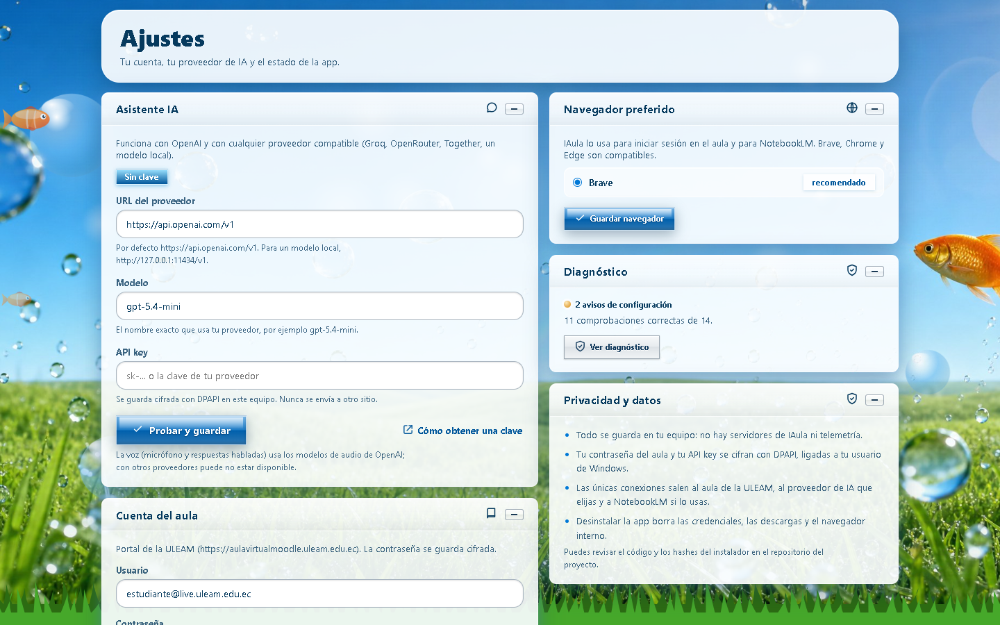
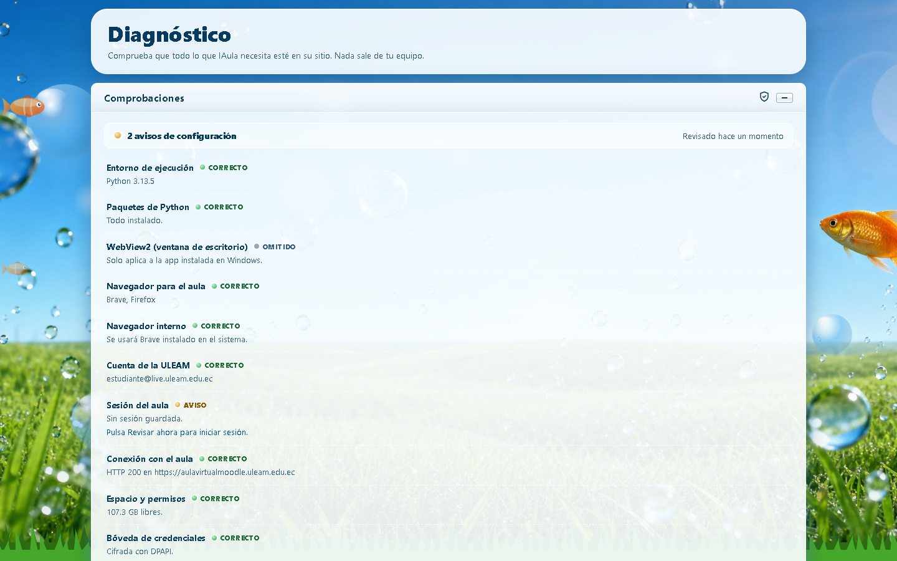

Resumen
Lo urgente primero: materiales nuevos desde la última revisión y la próxima entrega con cuenta regresiva.
Un panel local que te dice qué hay nuevo, qué se entrega pronto y te deja bajar los materiales de cada materia. Con un Asistente que conoce tus cursos y NotebookLM cuando lo necesitas.

Primer inicio: la cuenta del aula y, si quieres, tu proveedor de IA.
Todo sale de tu propia cuenta del aula. IAula no guarda nada en servidores propios.
Lo urgente primero: materiales nuevos desde la última revisión y la próxima entrega con cuenta regresiva.
Pregunta por tus cursos, tus fechas o el enunciado de un taller. Lee la descripción y los archivos de cada tarea pendiente para responderte con contexto real.
Cada materia con sus archivos y su atajo para abrir el aula. Descarga todo o solo lo que te interesa.
Una línea de tiempo con vencidas, hoy, esta semana y después. Sin abrir cinco pestañas para saber qué toca.
Sube los archivos de una materia a tu propio cuaderno, uno por curso, con tu sesión de Google.
Capturas reales de la app, sin datos de nadie.


No hay que configurar archivos ni abrir una terminal.
Doble clic en el archivo que baja desde el botón de esta página. El instalador coloca la app y verifica lo que necesita.
Escribe tu correo y tu contraseña en la primera pantalla. Se abre una ventana de Microsoft una sola vez para validar la sesión.
Pega tu API key en Ajustes. Funciona con OpenAI y con cualquier proveedor compatible. Si no tienes una ahora, el resto de la app funciona igual.
Cada release publica SHA256SUMS.txt. Compara el hash del archivo que descargaste
con el de esa lista y revisa el código en el repositorio. Si no coincide, no lo ejecutes.
Si prefieres no instalar la app, el panel se abre en tu navegador desde un contenedor. Necesitas Docker Desktop o Docker Engine.
git clone https://github.com/VxGM/IAula-Virtual-Uleam.git
cd IAula-Virtual-Uleam
docker compose -f packaging/docker/docker-compose.yml up -dIAula no es un servicio: es un programa que corre en tu equipo con tu cuenta.
El instalador no lleva ninguna API key. Cada persona pone la suya y se guarda cifrada con DPAPI, ligada a su usuario de Windows.
No hay servidores de IAula, ni cuentas centrales, ni telemetría. Las conexiones salen al aula, a tu proveedor de IA y a NotebookLM si lo usas.
La interfaz escucha únicamente en 127.0.0.1, con CSP, validación de origen y sin exponer secretos por HTTP.
Licencia MIT. Cada release incluye SHA256SUMS.txt para que compruebes el archivo antes de ejecutarlo.
No. El botón de descarga te lleva directo al instalador. GitHub solo aparece si quieres ver el código, descargar una versión antigua o reportar un problema.
Sí, con licencia MIT. El Asistente consume tu propia clave del proveedor de IA que elijas; el resto de funciones no cuesta nada.
Depende de tu proveedor y de cuánto lo uses. Puedes usar una clave gratuita, un proveedor compatible o un modelo local como Ollama. IAula solo envía la conversación y el contexto de las tareas que preguntas.
En %LOCALAPPDATA%\IAulaVirtual. La contraseña del aula y la API key se cifran con DPAPI. Las descargas se quedan en tu equipo y el desinstalador borra todo.
Porque el instalador todavía no tiene certificado de firma de código. Es habitual en proyectos nuevos. Puedes comprobar el hash SHA256 y revisar el código fuente antes de ejecutarlo.
IAula lee lo que tengas matriculado en tu cuenta del aula. No hay listas fijas de cursos ni de carreras.
Una sesión de Google en el navegador que elijas. IAula sube los archivos a tus propios cuadernos, uno por materia, y nunca a una cuenta intermedia.
La app de escritorio es para Windows. La versión Docker abre el mismo panel en el navegador y funciona en cualquier sistema con Docker.
Es un proyecto de estudiantes. No es oficial ni está afiliado a la ULEAM. Úsalo con tu propia cuenta y respeta las normas de tu institución.
Instálalo, entra con tu cuenta y deja que el panel te muestre el aula como debía verse.